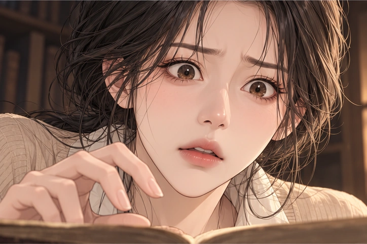
부르심을 받았지만 아직 대답하지 못한 지은아. 도서관 고서창고에서 작은 빛을 마주한다.
작은 목장에서 시작된 특별한 귀.생명의 목소리에 귀 기울이며 자라나는허지유의 따뜻하고 눈부신 이야기.
“괜찮아, 무서워하지 마.내가 여기 있어.”
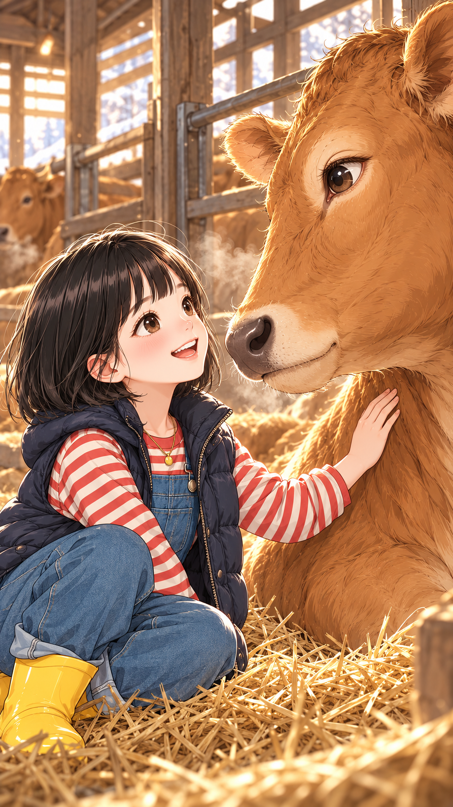
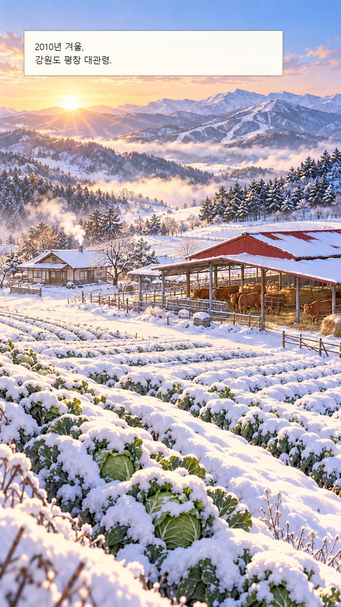
산이 하는 말을 듣던 그날. 모든 이야기는 눈 덮인 작은 목장에서 시작되었다.
처음 태어난 송아지의 목소리. 지유의 특별한 귀가 생명을 향해 열리기 시작한다.
서울의 낯선 소리 속에서 배우가 되어 가는 지유. 첫 무대의 빛은 새로운 만남으로 이어진다.
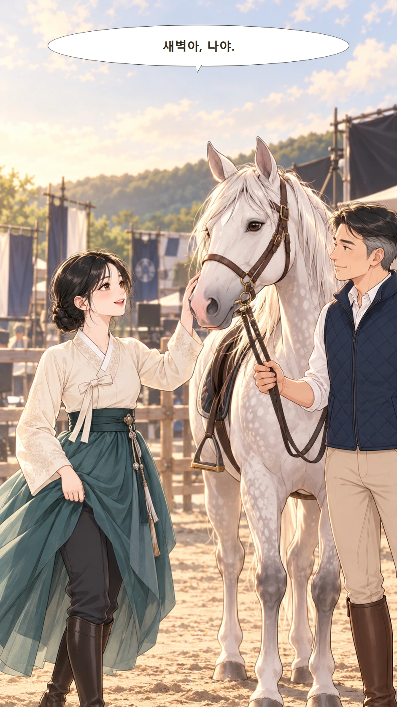
첫 촬영의 설렘 뒤에 찾아온 뜻밖의 멈춤. 지유와 새벽은 서로 다른 곳에서 같은 밤을 지나간다.
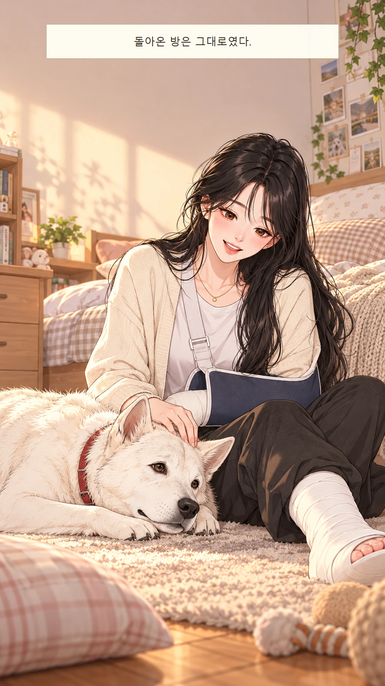
강원도 집에서 다시 배우는 작은 걸음. 가족의 위로와 콩이의 마지막 인사가 잠든 귀를 깨운다.
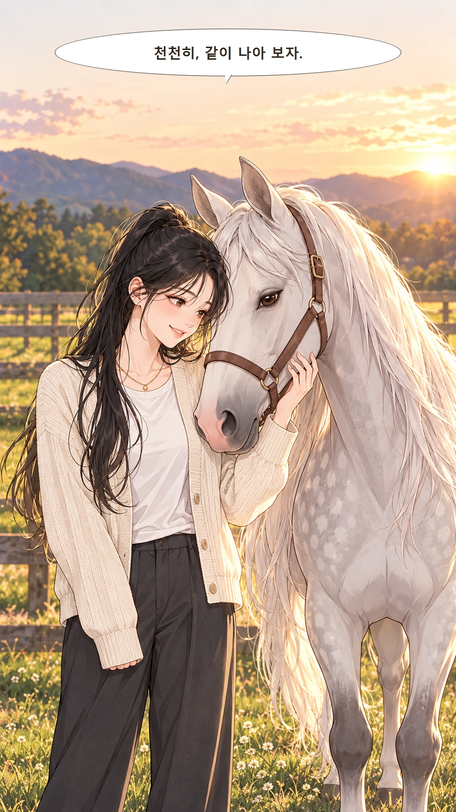
두려움을 안고 돌아간 서울숲. 새벽의 아픔을 알아 가며 다시 시작하는 동행.
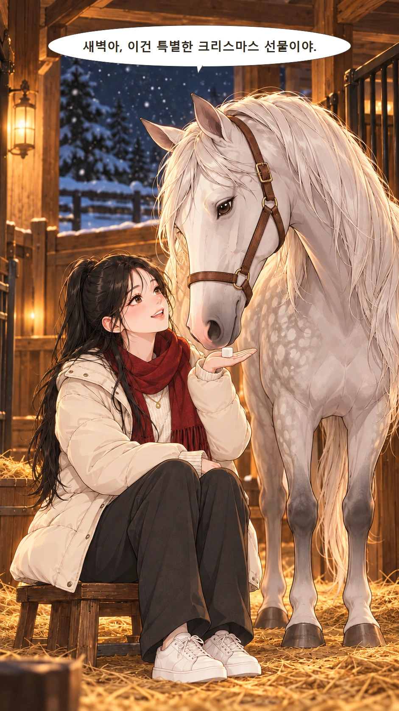
크리스마스이브, 특별한 각설탕 선물과 함께 잠들었던 귀가 다시 열린다.
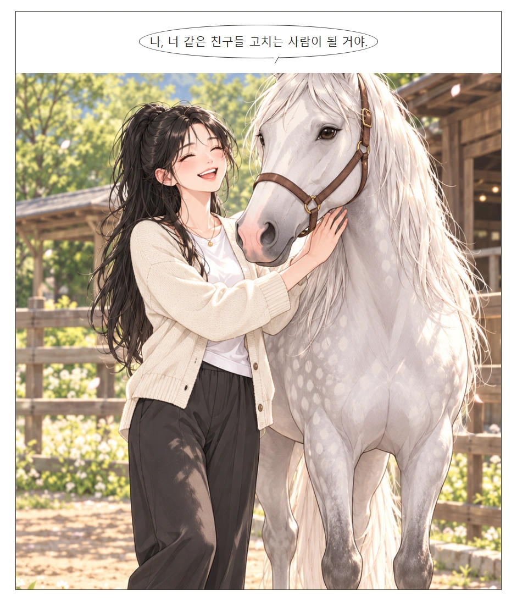
다시 온 무대의 기회. 들려오는 아픔 앞에서 지유가 선택하는 새로운 길.
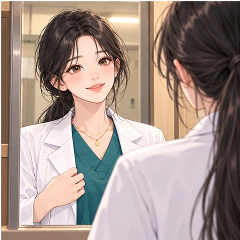
하얀 가운을 입은 지유. 배움과 실습을 거쳐, 족보의 작은 문양과 함께 새로운 길을 떠난다.
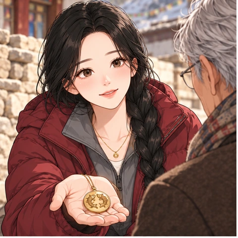
티베트 봉사에서 만난 텐진. 두 물고기 문양을 따라 가족의 오래된 이야기를 만난다.
산의 무거운 목소리를 들은 지유. 도르지와 구조대가 함께 생명을 향해 움직인다.
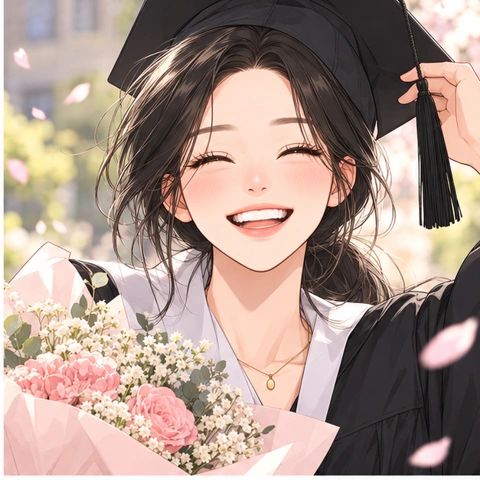
수의사로 첫걸음을 내딛고 동물친구 토리TV를 시작한 지유. 화면 너머 퓨어데이를 만난다.
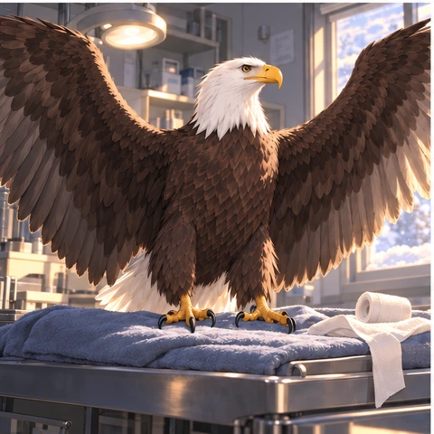
다친 루아와 조아름의 방문. 서로의 부르심을 확인한 지유는 알프스로 향한다.
어린 지유의 목장에서 수의사 밍토리의 오늘까지.서로의 아픔을 알아듣고, 곁을 지켜 주는 사람들의 이야기입니다.